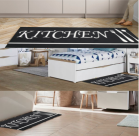

ANTI CHUTE
Antidérapant et anti glisse, sans aucun risque de chute, même quand le sol est mouillé.
ABSORBANT ET RESISTANT
Ce tapis de cuisine Kitchen design est résistant, absorbant et sécurisé.
CONFORT
Le dos en caoutchouc latex antidérapant est un véritable gage de confort.